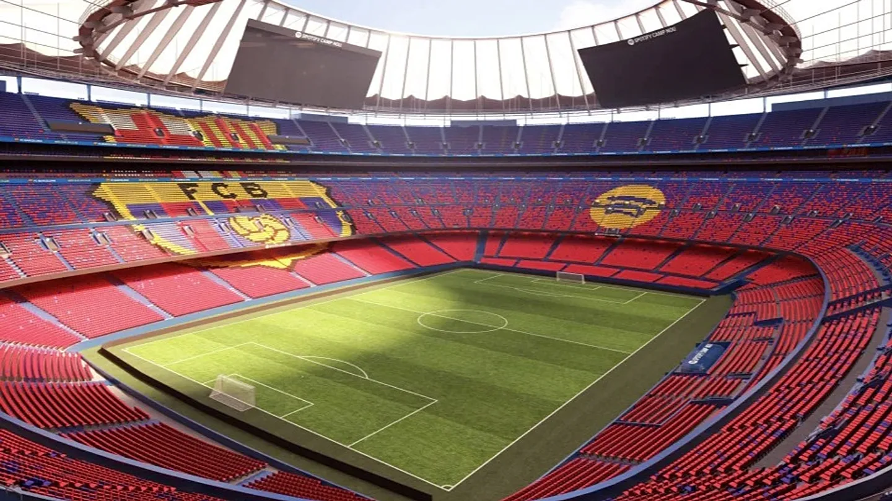

O klubu FC Barcelona
FC Barcelona je eden najbolj prepoznavnih nogometnih klubov na svetu. Ustanovljen je bil leta 1899 v mestu Barcelona v Španiji. Klub je skozi svojo zgodovino postal simbol športne odličnosti, kulture in identitete Katalonije.
Moto kluba je "Més que un club", kar pomeni "Več kot klub". Ta moto predstavlja povezavo med klubom, navijači in lokalno skupnostjo. FC Barcelona ni samo nogometni klub, ampak tudi pomemben del kulturne identitete mesta Barcelona.
Skozi desetletja je klub osvojil številne domače in mednarodne naslove, vključno z več naslovi španske lige (La Liga) in Lige prvakov. Med najbolj znanimi igralci v zgodovini kluba so Lionel Messi, Xavi, Andrés Iniesta, Ronaldinho in mnogi drugi.

Zgodovina kluba
FC Barcelona je bil ustanovljen leta 1899, ko je skupina nogometašev, ki jih je vodil Joan Gamper, ustanovila klub. V prvih letih je klub hitro pridobil popularnost in postal eden izmed vodilnih nogometnih klubov v Španiji.
V 20. stoletju je klub dosegel številne uspehe in postal simbol katalonske kulture. FC Barcelona je znana po svojem napadalnem nogometu in slavni akademiji La Masia, ki je vzgojila mnoge svetovno znane nogometaše.
Klub je skozi zgodovino igral pomembno vlogo tudi zunaj športa, saj predstavlja pomemben del identitete in ponosa prebivalcev Katalonije.
Camp Nou stadion
Camp Nou je domači stadion FC Barcelone in eden največjih nogometnih stadionov na svetu. Stadion ima kapaciteto več kot 99.000 gledalcev in predstavlja eno izmed najbolj znanih športnih prizorišč v Evropi.
Na stadionu se vsako leto zberejo milijoni navijačev, ki pridejo navijat za svoj klub. Poleg nogometnih tekem stadion gosti tudi različne športne in kulturne dogodke.
Navijači
FC Barcelona ima milijone navijačev po vsem svetu. Navijači so znani po svoji strasti in podpori klubu. Na tekmah na stadionu Camp Nou ustvarjajo izjemno atmosfero, ki motivira igralce in ustvarja nepozabno nogometno izkušnjo.
Navijači Barcelone prihajajo iz različnih držav in kultur, kar kaže na globalni vpliv kluba.
Vrednote kluba
Strast
Nogomet je več kot šport. Predstavlja strast, energijo in povezanost med igralci in navijači.
Ekipa
Uspeh temelji na sodelovanju. FC Barcelona vedno poudarja pomembnost ekipe in skupnega dela.
Zgodovina
Klub ima bogato zgodovino in tradicijo, ki jo spoštujejo milijoni navijačev po vsem svetu.